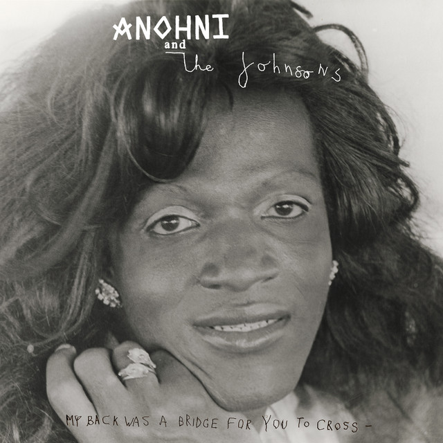

Anohni - My Back Was a Bridge for You to Cross



Información del álbum facilitada por discogs.com:
Fecha de lanzamiento: 2023
Géneros: Rock, Pop
Estilos: Art Rock, Alt-Pop, Avantgarde
Pais: Brazil
Sello: Not On Label (Terraplana Self-released)
Bass - Stephani Heuczuk
Drums - Wendeu Silverio
Vocals, Guitar - Matheus Teles
Vocals, Guitar, Synthesizer, Recorded By, Mixed By, Mastered By, Photography By - Vinícius Lourenço
Tracklist:
A1. It Must Change
A2. Go Ahead
A3. Sliver Of Ice
A4. Can’t
A5. Scapegoat
B1. It’s My Fault
B2. Rest
B3. There Wasn’t Enough
B4. Why Am I Alive Now?
B5. You Be Free